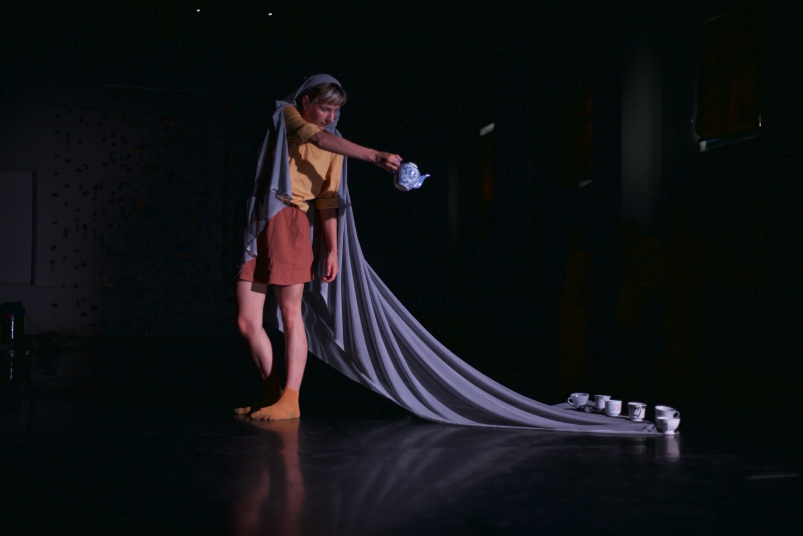
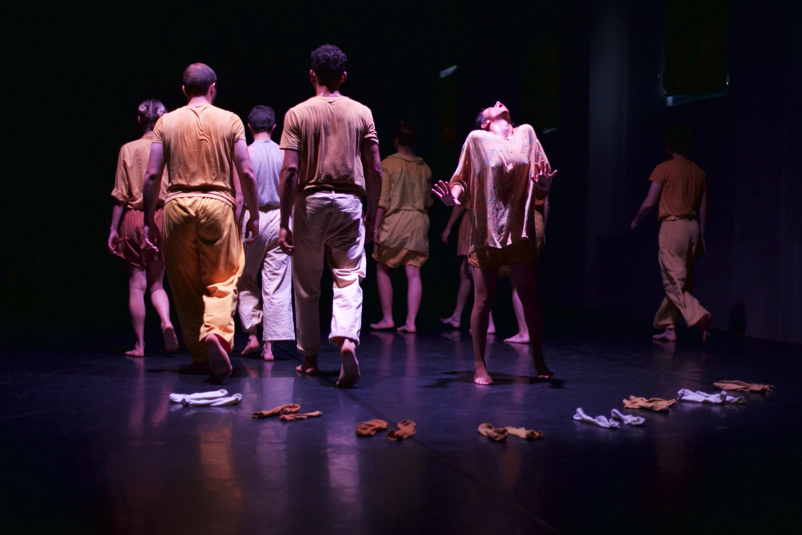
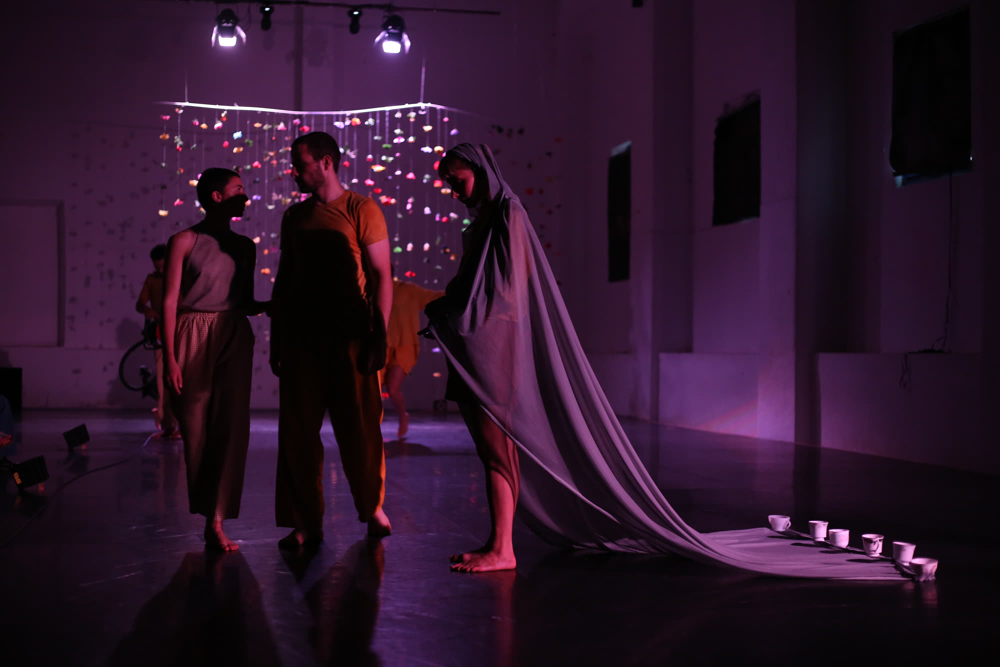

© Massimiliano Arnano
Transforming the wall between us and them into something fragile, what remains is the sound of the rain that chases without consuming us. The expectations, those, haunt every moment, in 3D format, searching for our wildest, intimate and transparent desires.
We keep looking back, in the search for the answer, logic, sense. We count the beatings, ours and theirs. At what rate walks our heart?
A production created for students of the Performact course during the 2020/2021 academic year.
Concept and Direction - Juliana Fernandes
Performers and Co-creators - Adi Rozen, Celia Morris, Emilio Bagnasco, Gustavo Magalhães, Inbar Aviram, Julie Stamm, Maja Kubalanca and Robin Zimmerman
Choreographic Assistant - Mariana Oliveira
Lighting Design and Operation - Clemence Peytoureau
Photography and Video - Massimiliano Arnano
Teatro Cine, Torres Vedras & Performact Studios



© Massimiliano Arnano